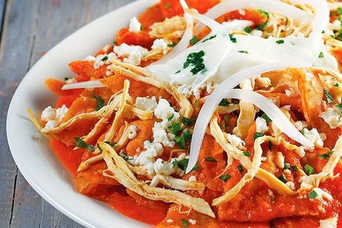
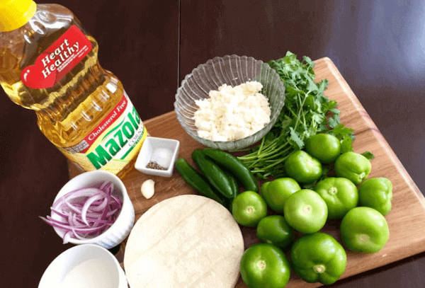

| que son los chilaquiles |
- son un plato típico mexicano
- es Tortilla de maíz
con relleno de queso, hierbas y chile
|
 |
| ingredientes para hacer chilaquiles |
- 3 jitomates guaje
- 2 dientes de ajo
- 1/4 de cebolla
- Sal al gusto
- 6 chiles guajillo limpios
- 400 g de totopos para chilaquiles
|
 |
| tipos de chilaquiles |
- Chilaquiles rojos
- La receta de chilaquiles rojos siempre es
buena para iniciar el día, sea con huevo o con pollo.
- Chilaquiles verdes con pollo
- los chilaquiles verdes son los más comunes en
todo México y puedes encontrarlos con todo tipo de proteína
- Chilaquiles de carne de res
- En esta o en cualquier otra receta
de chilaquiles que quede crocante
es vital, pues es esa textura crujiente los caracteriza
|
 |